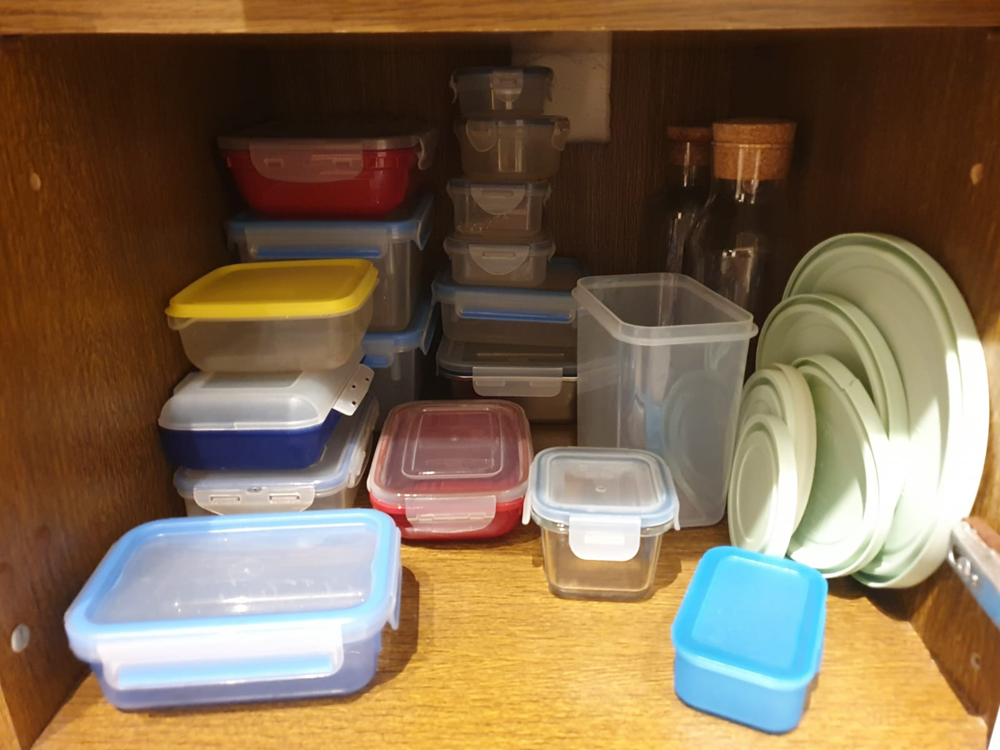
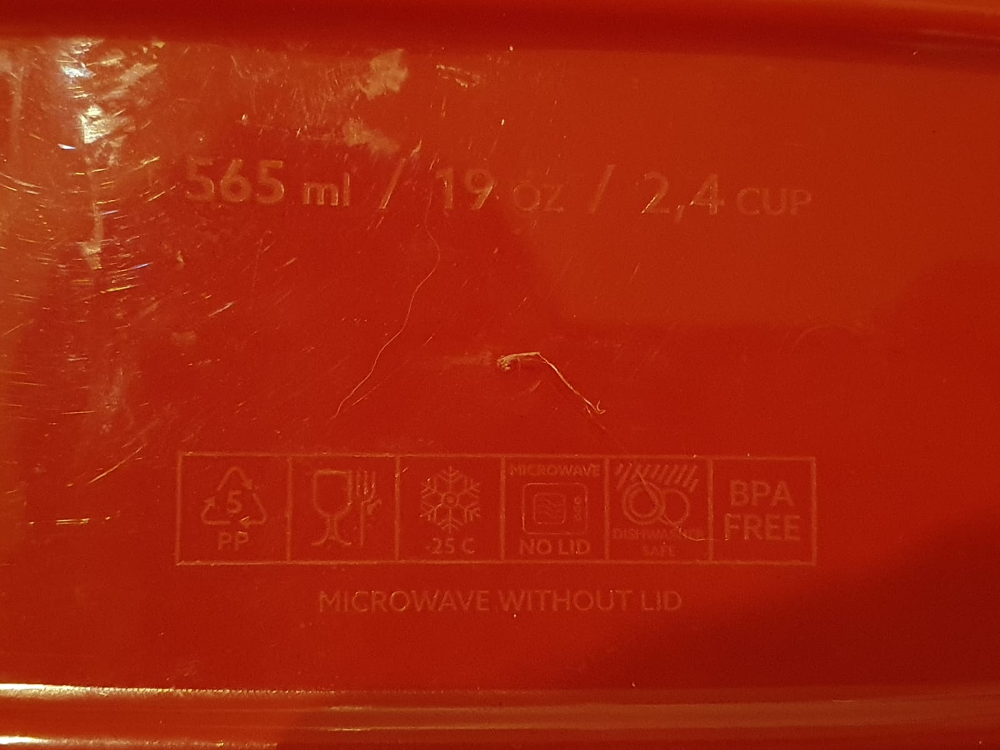
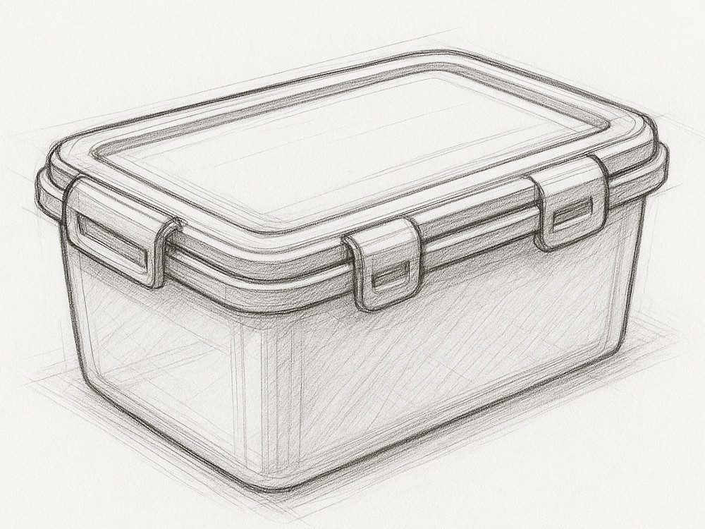

Ich habe gerade das Gefühl, dass es keine guten Frischhaltedosen gibt.
{kind=link}

Ich will ein Set von Frischhaltedosen, welche folgende Eigenschaften haben:
- Sie haben Deckel, welche einrasten. Ich will die Dosen auch mal in der Tasche transportieren, ohne dass sie auslaufen. Die Frischhaltedosen sollen also einen Rand haben, in welchen der Deckel einrastet.
- Sie sind mit Deckel stapelbar, ohne dass sie verrutschen. Der Deckel hat also eine Vertiefung, in welche der Boden der Dose darüber passt.
- Sie sind ohne Deckel platzsparend stapelbar. Sie müssen also nach unten verjüngt sein.
- Sie sind auslaufsicher. Die Deckel müssen also eine Dichtung haben.
- Es gibt sie in verschiedenen Materialien:
- Glas: Für Zuhause. Für den Ofen, die Mikrowelle, Spülmaschine und Gefrierschrank geeignet. Transparent.
- Kunststoff: Für unterwegs. Für die Mikrowelle, Spülmaschine und Gefrierschrank geeignet. BPA-frei. Transparent.
- Es gibt verschiedene Größen, die jedoch den gleichen Deckel nutzen.
- Sie sind innen und außen glatt, damit sie leicht zu reinigen sind.
- Sie sind eckig, damit sie im Kühlschrank und in der Tasche wenig Platz verschwenden.
- Es gibt je eine mit 500ml, 1l und 5l Volumen. Sie nutzen jedoch alle den gleichen Deckel.
- In die Frischhaltedosen sind 4 kleine Füße integriert, damit sie nicht direkt auf der Tischplatte stehen. So kann Luft zirkulieren.
- Auf dem Boden sollte eine Beschriftung sein, die angibt, ob die Dose für Gefrierschrank, Mikrowelle, Spülmaschine und Ofen geeignet ist. Die Marke/das Modell der Dose sowie deren Volumen sollten auch auf dem Boden stehen. Außen. Nicht innen. Damit man sie immer noch leicht reinigen kann.
{kind=link}

Die perfekten Maße
{kind=link}

Ich denke, eine Deckelfläche von 11x16cm ist ideal. Der Deckel soll einen 1cm breiten Rand haben, in welchen der Boden der Dose darüber passt. Daher müssen die Dosen die Form eines rechtwinkligen Pyramidenstumpfs haben. Damit ergibt sich für das Volumen folgende Formel:
$$V = \frac{h}{3} \cdot (A_1 + A_2 + \sqrt{A_1 \cdot A_2})$$
Mit $A_1 = 9cm \cdot 14cm = 126cm^2$ und $A_2 = 11cm \cdot 16cm = 176cm^2$ ergibt sich:
$$V(h) = 150.37cm^2 \cdot h$$
- 500ml: h=3.3cm
- 1l: h=6.6cm
- 2l: h=13.3cm
Kandidaten
- Ikea 365+: Warum gibt es die nur in 1l? Der wäre nahezu perfekt.
- Lock&Lock: Mal wieder zu viele Deckel und die Größen passen nicht - nur 380ml ist zu klein, aber 630ml ist zu groß.
- Emsa: Dasselbe Problem wie bei Lock&Lock. Die 0.55L Dose ist perfekt für vieles, aber der Deckel passt halt nur auf diese Größe.
- OXO scheint auch nichts zu haben.
Wenn ihr noch gute Kandidaten kennt, schreibt mir gerne eine E-Mail an info@martin-thoma.de. Vielleicht gibt es ja ein paar Meal-Prep-Enthusiasten, die eine gute Lösung gefunden haben 😉